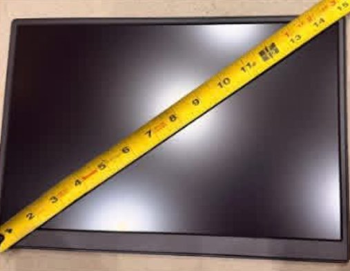
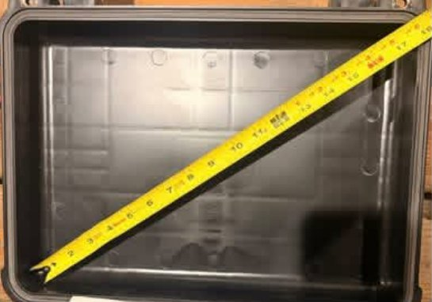

The finished RuggedStream 14 build. Some parts may differ from the exact listings below. Screen graphic added in editing.
DIY BUILD
RuggedStream 14: Build a Rugged, Portable 14.5-inch Streaming TV
A 14.5-inch screen in the lid, a Fire TV Stick and a power bank in the foam, and a capped USB-C jack on the outside. Open the latches and you're watching.
Difficulty: ModerateTime: one afternoon, plus a day for the adhesive to cure14 Amazon items + 1 Harbor Freight caseBudget tier: mid-range
As an Amazon Associate I earn from qualifying purchases. Links and cart buttons marked #ad are affiliate links and may earn a commission at no extra cost to you. The Harbor Freight links are not affiliate links. Read the full disclosure.
What you're building
A streaming TV that fits in a hard case. A 14.5-inch portable monitor is mounted in the lid of a Harbor Freight Apache 3800. A Fire TV Stick sits next to it, a power bank in the foam runs both, and a small Bluetooth speaker handles the sound. Take it to the tailgate, the campsite, the job-site lunch break or a hotel room.
A USB-C jack on the outside of the case lets you recharge with the lid latched. You only run it with the lid open. Nothing is permanent except one small hole for that jack, and the monitor comes off the Dual Lock if you want it back.
Fit check: will a 14.5-inch screen fit?
Screen size is measured corner to corner across the glass, but what has to fit is the monitor's body, its footprint. Measure your case lid first. Here are the numbers we checked:
Item
Inside / body size
Room to spare
Apache 3800 interior (Harbor Freight spec)
14-7/8 x 10-5/8 x 6-1/8 in; about 18.3 in corner to corner
—
UPERFECT 14.5-inch monitor body
about 12.6 x 8.3 x 0.4 in (about 15.1 in corner to corner)
about 2.3 in of extra length and 2.3 in of extra width
Fire TV Stick 4K Plus
4.25 x 1.18 x 0.55 in with the HDMI plug
Fits in the strip beside the monitor
Pelican 1500 interior (Amazon option)
16.75 x 11.18 x 6.12 in; lid depth 1.81 in
about 4.2 in of extra length and 2.9 in of extra width
Apache 4800 interior (18.5-inch version)
17-7/8 x 12-7/8 x 6-5/8 in
With the cocopar 18.5-inch: about 1.3 in of extra length and 2.8 in of extra width. It fits, but it's tight.
Some listings give the UPERFECT as about 14 x 8.7 in, which most likely includes its folding cover. Even at that size it fits the 3800 lid, with about 0.9 in left on the long side. Harbor Freight doesn't publish the 3800's lid depth. The monitor plus engaged Dual Lock is about 0.65 in thick and the stick stack is about 0.8 in, so measure your lid before you mount anything.
Power check: one bank, both devices
Device
Needs
Bank port
UPERFECT monitor
USB-C power, about 11 W typical. It ships with a 30 W charger, and full brightness wants a 30 W source.
Built-in retractable USB-C cable (up to 100 W)
Fire TV Stick 4K Plus
Micro USB. Amazon rates Fire TV Stick 4K models at 5.25 V and 1 A max (about 5 W).
USB-A (up to 33 W) through the 1 ft micro USB cable
Charging jack
Brings power in from outside the case
Free USB-C port (USB-C in/out, up to 100 W)
JBL Go 4
Has its own battery. Top it up between games.
Short built-in USB-C cable, when needed
Anker rates the A1695 at 90 Wh, and its ports share up to 130 W when three or four are in use. That's far more than the roughly 16 to 35 W this build pulls. Our estimate, not a test: expect around 2 to 4 hours of watching per charge, depending mostly on screen brightness. Turn the brightness down to stretch it.
The case
Apache 3800 (Harbor Freight only). The Apache 3800 Weatherproof Protective Case, Large, Black, at Harbor Freight (not an affiliate link) is the case this build is sized around. It's polypropylene with a gasketed, IP65-rated lid and pick-and-pull foam. Buy it at a Harbor Freight store or on harborfreight.com. That's why it isn't in the Amazon cart.
No Harbor Freight nearby? Use the all-Amazon cart below. It adds the Pelican 1500, which is a little bigger inside and also fits the 14.5-inch monitor.
Get the kit
Apache 3800 build
Everything but the case
Pair it with the Harbor Freight Apache 3800
14 items (14 units)
Monitor, Fire TV Stick 4K Plus, power bank, speaker, all the cables and adapters, the charging jack, the Dual Lock and primer, the cable management and the step bit.
Each cart button sends every Amazon item in that build, one of each, to Amazon's add-to-cart page. Amazon may ask you to sign in. Then you confirm and the items land in your cart. Nothing is purchased until you check out, and you can remove anything you already own.
Already own it? Skip it. If you already have a power bank with a USB-C port that puts out at least 30 W plus a USB-A port, or you already own a Bluetooth speaker or a streaming stick, remove those lines from your cart.
Every Amazon item was shipped or sold by Amazon and in stock when we checked on Oct 6, 2026. Availability changes, so check each listing on Amazon for today's price before you buy.
The TV. A 14.5-inch 16:10 panel in a body about 12.6 x 8.3 in, so it fits the Apache 3800 lid with roughly 2 in to spare each way. Power goes in over USB-C and video over mini HDMI. Used in steps 4, 6, 10.
The streamer and its remote. Amazon rates its Fire TV Stick 4K models at 5.25 V and 1 A max (about 5 W), so the power bank's USB-A port runs it with room to spare. Used in steps 5, 6, 8, 10.
Runs the monitor and the Fire TV at the same time from separate ports: the built-in retractable USB-C cable feeds the monitor, USB-A feeds the stick, and a free USB-C port takes the charging jack. 90 Wh, under the 100 Wh carry-on limit. Used in steps 6, 7, 8, 11.
Fuller sound than the monitor's small built-in speakers. It pairs to the Fire TV over Bluetooth and fits a foam pocket (about 3.7 x 3 x 1.7 in). Used in steps 8, 10.
A 7-inch, right-angle jumper from the monitor's mini HDMI port to the Fire TV stick, so nothing sticks out past the lid wall. Left, up and straight versions are sold too. Check which way your monitor's port faces before you order. Used in steps 1, 6.
Turns the power bank's USB-C plug flat against the monitor's side so it doesn't hit the lid wall or get bent when you close the case. The second one is a spare. Used in step 6.
A short lead from the power bank's USB-A port to the Fire TV stick, so there's no long coil to stuff in the case. You need one; the other two are spares. Used in step 6.
Puts a capped USB-C jack on the outside of the case, so you can recharge the power bank with the lid shut. It mounts in a 14 x 15 mm hole with a nut and has a screw-on dust cap. Used in steps 7, 11.
Holds the monitor and the Fire TV stick in the lid, but still lets you pull the monitor out. Four 1 x 3 in pairs for the monitor plus one short pair for the stick uses a little over half the roll. Used in steps 4, 5.
The Apache's shell is polypropylene, a slick, low-surface-energy plastic that most adhesives peel off. 3M calls for Primer 94 before the tape goes on. Used in steps 4, 5, 9.
Cuts a clean, round hole for the charging jack in the case wall. Start at 9/16 in and test-fit as you go. It needs a drill, which isn't included. Used in step 7.
The all-Amazon case. Its interior (16.75 x 11.18 in, 1.81 in lid depth) is a little larger than the Apache 3800's, and it comes with pick-and-pluck foam. Used in step 2.
An internet connection. The Fire TV needs Wi-Fi, so plan on venue Wi-Fi or your phone's hotspot. Streaming uses a lot of data, so check your phone plan.
Your streaming apps and accounts.
A drill or driver for the step bit, plus scissors, a tape measure and a marker.
Build steps
Dry-fit everything. Lay the monitor in the empty lid and check that it clears the walls and the hinge. Note which side its ports are on and which way the mini HDMI port faces, and make sure your Twozoh angle matches. Measure the lid depth. Kit items: UPERFECT 14.5-inch 4K Portable Monitor (3840x2400, USB-C and mini HDMI); Twozoh Mini HDMI to HDMI Female Adapter Cable, 0.6 ft, 90° Right Angle.


Fit check: measuring the 14.5-inch monitor and the empty Apache 3800 corner to corner before mounting anything. The monitor leaves some room on each side.
Prep the case foam. Pull the egg-crate foam out of the lid. Don't throw it away: trim it to sit loosely on top of the base foam, where it pads the screen when the case is closed. Leave the pick-and-pull foam in the base for step 8. (All-Amazon build: the Pelican 1500 foam works the same way.) Kit items: Pelican 1500 Case with Foam, Black.
Clean the mounting spots. Wipe the inside of the lid where the monitor and stick will go with alcohol pads, then let it dry fully. Mold-release film on new plastic is the main reason adhesives fail. Kit items: Care Touch 70% Isopropyl Alcohol Prep Pads, 100-Pack.
Prime the lid and mount the monitor. Slide the monitor toward the side away from its ports, so all the spare width (about 2.3 in) ends up on the port side. Mark its outline. Dab Primer 94 only on the lid plastic where the strips will land (never on the monitor), and let it dry. Cut four 1 x 3 in pieces of Dual Lock, snap each to a matching piece, stick one side to the back of the monitor and press the monitor into the lid. Press hard over every strip. 3M recommends at least 4 sq in of fastener per pound, and this uses about 12 sq in for a monitor of about 1 lb. If your monitor has a folding cover attached to the back, take it off first. Kit items: 3M Tape Primer 94 Pen, 10-Pack; 3M Dual Lock SJ3560 Reclosable Fastener, Clear, 1 in x 4 ft; UPERFECT 14.5-inch 4K Portable Monitor (3840x2400, USB-C and mini HDMI).
Mount the Fire TV stick. Prime a spot in the port-side strip, next to the monitor's mini HDMI port. Stick a short Dual Lock pair (about 1 x 2 in) to the flat back of the Fire TV stick and press it into place. Kit items: 3M Tape Primer 94 Pen, 10-Pack; 3M Dual Lock SJ3560 Reclosable Fastener, Clear, 1 in x 4 ft; Amazon Fire TV Stick 4K Plus with Alexa Voice Remote.
Connect video and power. Plug the Twozoh's mini HDMI end into the monitor and the Fire TV stick into its HDMI socket. Put a JSAUX 90-degree adapter in the monitor's USB-C power port. Pull out the power bank's retractable USB-C cable and plug it into the adapter. Run the 1 ft micro USB cable from the bank's USB-A port to the stick. If the 1 ft lead won't reach in your layout, use the longer cable that comes with the Fire TV and bundle the slack. Kit items: Twozoh Mini HDMI to HDMI Female Adapter Cable, 0.6 ft, 90° Right Angle; JSAUX 90-Degree USB-C Male to Female Adapter, 2-Pack (100W); Anker Laptop Power Bank, 25,000mAh, 165W (A1695), two built-in USB-C cables; SUNGUY 1 ft USB-A to Micro USB Cable, 3-Pack; Amazon Fire TV Stick 4K Plus with Alexa Voice Remote; UPERFECT 14.5-inch 4K Portable Monitor (3840x2400, USB-C and mini HDMI).
Install the charging jack. Take every electronic item out of the case first. Pick a flat spot on the base's side wall near where the power bank will sit, below the lid's gasket rim. Drill with the step bit, stopping at 9/16 in, then test-fit the jack. Only step up to the next size if the threaded body won't pass. Clean off the burrs, install the jack with its nut, and screw on the cap. Inside, plug the jack's male end into the bank's free USB-C port. Kit items: NEIKO 10184A Step Drill Bit, 1/4 to 3/4 in; OBVIS USB-C Male to Female Panel-Mount Extension, 1 ft, with Screw Cap; Anker Laptop Power Bank, 25,000mAh, 165W (A1695), two built-in USB-C cables.
Cut the base foam pockets. Pluck pockets for the power bank (next to the hinge and the jack, so the cables stay short), the remote, the speaker, and the monitor's 30 W charger and cable. Strap the spare cables with One-Wrap ties. Pair the speaker on the Fire TV: open Settings, then the Bluetooth menu (called Remotes & Bluetooth Devices or Controllers & Bluetooth Devices, depending on the software version), then Other Bluetooth Devices. Kit items: Anker Laptop Power Bank, 25,000mAh, 165W (A1695), two built-in USB-C cables; Amazon Fire TV Stick 4K Plus with Alexa Voice Remote; JBL Go 4 Portable Bluetooth Speaker, Black; VELCRO Brand ONE-WRAP Cable Ties, 8 x 1/2 in, Black, 25-Pack.
Manage the cables. Leave a gentle slack loop where the cables cross the hinge, so opening the lid doesn't pull on the ports. Keep every cable inside the gasket line so nothing gets pinched and the lid still seals. Prime the plastic, then stick cable clips along the lid to hold the HDMI and power leads flat. Kit items: XIAOXI Self-Adhesive Cable Clips, 40-Pack (3M VHB tape); 3M Tape Primer 94 Pen, 10-Pack; VELCRO Brand ONE-WRAP Cable Ties, 8 x 1/2 in, Black, 25-Pack.
Let it cure, then do the first power-up. Give the adhesive a day to build strength before you travel with it. Then open the case, connect the Fire TV to Wi-Fi or your hotspot, sign in to your apps and test the sound. Close the lid with the foam pad in place and make sure nothing presses on the screen. Kit items: Amazon Fire TV Stick 4K Plus with Alexa Voice Remote; UPERFECT 14.5-inch 4K Portable Monitor (3840x2400, USB-C and mini HDMI); JBL Go 4 Portable Bluetooth Speaker, Black.
Charge it closed, watch it open. Between uses, latch the lid, unscrew the jack cap and recharge the bank through the jack with the monitor's included 30 W USB-C charger and cable. Screw the cap back on afterward. Watch only with the lid open. Kit items: OBVIS USB-C Male to Female Panel-Mount Extension, 1 ft, with Screw Cap; Anker Laptop Power Bank, 25,000mAh, 165W (A1695), two built-in USB-C cables.
Heat and ventilation: never run it with the lid closed. The monitor, the stick and the bank all make heat, and a sealed case traps it. Amazon lists 32–95°F as the operating range for its Fire TV Stick 4K, so on a hot day keep the case in the shade, not in direct sun on a tailgate or dashboard. If the stick shows an overheating warning, turn it off and let it cool.
Lithium battery safety: the power bank is a large lithium-ion battery. Take it and every other device out before you drill, and keep metal shavings out of the case. Don't charge it unattended or in a closed hot car, and stop using it if it swells, smells or gets hot. At 90 Wh it can fly in carry-on bags (never checked bags), but check your airline's rules. Drilling the jack hole means the case is no longer IP65 waterproof. Keep the cap screwed on, and keep the case out of the rain when it's open.
This is a general overview. Follow each manufacturer's instructions, and test the fit and power on your own gear before you rely on it.
Going bigger: Apache 4800 and an 18.5-inch screen
The Apache 4800 Weatherproof Protective Case, X-Large, Black, at Harbor Freight (not an affiliate link) is 17-7/8 x 12-7/8 in inside. That fits an 18.5-inch portable monitor, but tightly: with the cocopar below there's only about 0.6 in of spare length per side, so dry-fit before you buy anything else. Swap in these two items and keep the rest of the kit:
The 18.5-inch screen for the Apache 4800. Its body is about 16.6 x 10.1 x 0.25 in, and the listing gives 22 W power draw and a full-size HDMI port. Used in the 18.5-inch version.
Takes the place of the mini-HDMI jumper because the cocopar has a full-size HDMI port. It's also sold in left, up and down versions. Used in the 18.5-inch version.
The cocopar has a built-in kickstand. Put the Dual Lock on the flat back panel, not on the kickstand. At about 2.4 lb, it needs roughly 10 sq in of fastener, so use five 1 x 3 in pairs from the same roll. With its listed 22 W draw plus the stick, expect a shorter run per charge than the 14.5-inch build. Every other part is the same, and the power bank's USB-C cable covers the monitor.
18.5-inch version
Apache 4800 build
Pair it with the Harbor Freight Apache 4800
14 items (14 units)
The core kit with the cocopar 18.5-inch monitor and the full-size right-angle HDMI extension in place of the 14.5-inch monitor and the mini HDMI jumper.
Tell us the project, or paste an Amazon item you're starting from. We research every step, build a complete Good/Better/Pro list and send you a kit page with a one-click cart. The kit is free.
Photos: the finished RuggedStream 14 build and its fit check. The Grand Garage graphic on the TV screen was added in editing.
As an Amazon Associate I earn from qualifying purchases. Links and cart buttons marked #ad are affiliate links and may earn a commission at no extra cost to you. The Harbor Freight links are not affiliate links. Read the full disclosure.